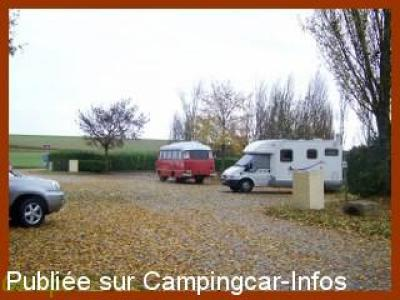
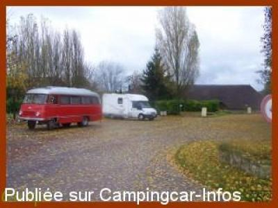

APN = Parking toléré jour/nuit de :
JAVERNANT
(N° 539)
Accès/adresse :
Rue Principale, N77
Le Cheminot
10320 JAVERNANT
Le Cheminot
10320 JAVERNANT
Latitude : (Nord) 48.14806° Décimaux ou 48° 8′ 53′′
Longitude : (Est) 4.01022° Décimaux ou 4° 0′ 36′′
Tarif : Gratuit
Services :
Tables pique-nique
Jeux
Autres informations :
Emplacements ombragés

Le 24/11/2009 par Gicepe

Le 24/11/2009 par Gicepe
de
François 63
le 07/07/2014 :
Aire très calme malgré la RN77 pas très éloignée.
Dommage que le robinet ne donne pas d'eau
Ombrage, tables et bancs pour picnique
Aire très calme malgré la RN77 pas très éloignée.
Dommage que le robinet ne donne pas d'eau
Ombrage, tables et bancs pour picnique
de
Fred Martin
le 10/06/2014 :
Aire simple et au calme. Idéale pour une nuit en transit.
Aire simple et au calme. Idéale pour une nuit en transit.
de
champenois
le 25/08/2013 :
bon coin pour le repos mais il n'y a plus de services(eau, wc et vidange eau grise)
bon coin pour le repos mais il n'y a plus de services(eau, wc et vidange eau grise)
de
Gicepe
le 24/11/2009 :
Cette halte routière accepte même les caravanes comme l'indique la photo.
Cette halte routière accepte même les caravanes comme l'indique la photo.
de
arielle
le 01/08/2008 :
Très bien, calme malgré la proximité de la route, possibilité de jeux pour les enfants.
Très bien, calme malgré la proximité de la route, possibilité de jeux pour les enfants.
de
JEAN MARIE
le 21/06/2007 :
Sauf qu'il ne s'agit pas d'une aire de services à proprement parler mais d'un parking aménagé en aire de bivouac. Latitude: 48°O8'53, longitude: 04°00'36
Sauf qu'il ne s'agit pas d'une aire de services à proprement parler mais d'un parking aménagé en aire de bivouac. Latitude: 48°O8'53, longitude: 04°00'36
de
Sofie51
le 09/05/2006 :
Malgré la proximité de la route aire calme, une ancienne grange est aménagée en sanitaire bien entretenu. Merci à toutes ces petites communes
Malgré la proximité de la route aire calme, une ancienne grange est aménagée en sanitaire bien entretenu. Merci à toutes ces petites communes